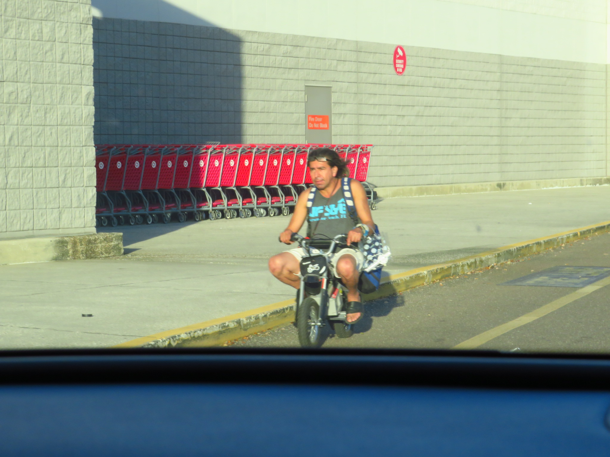
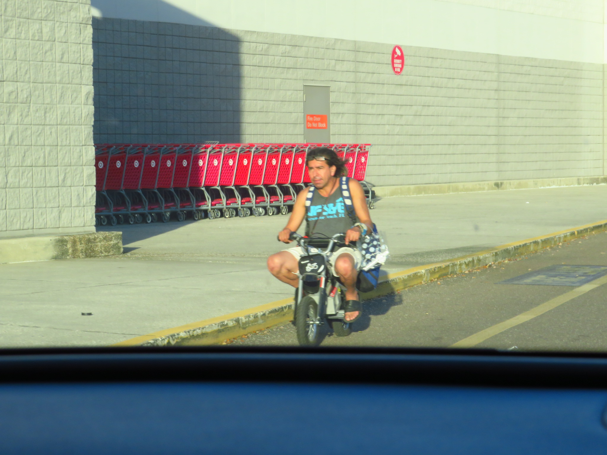
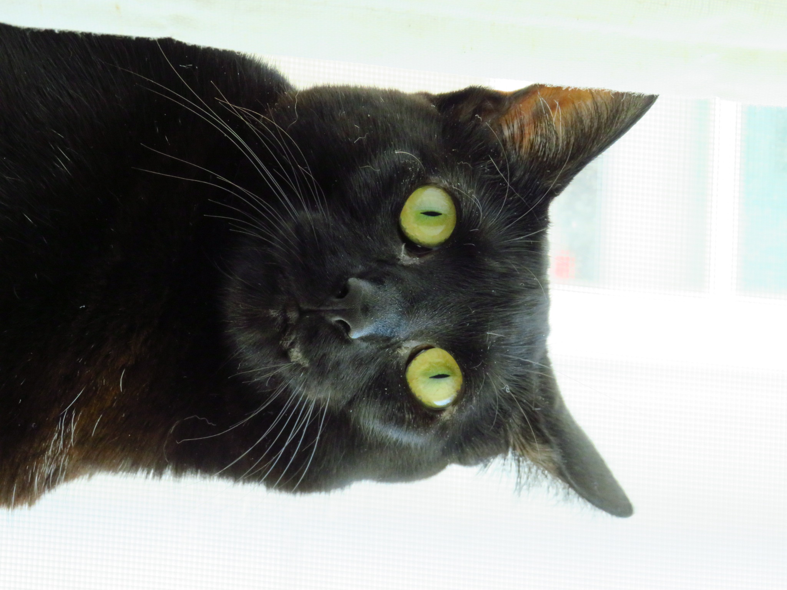
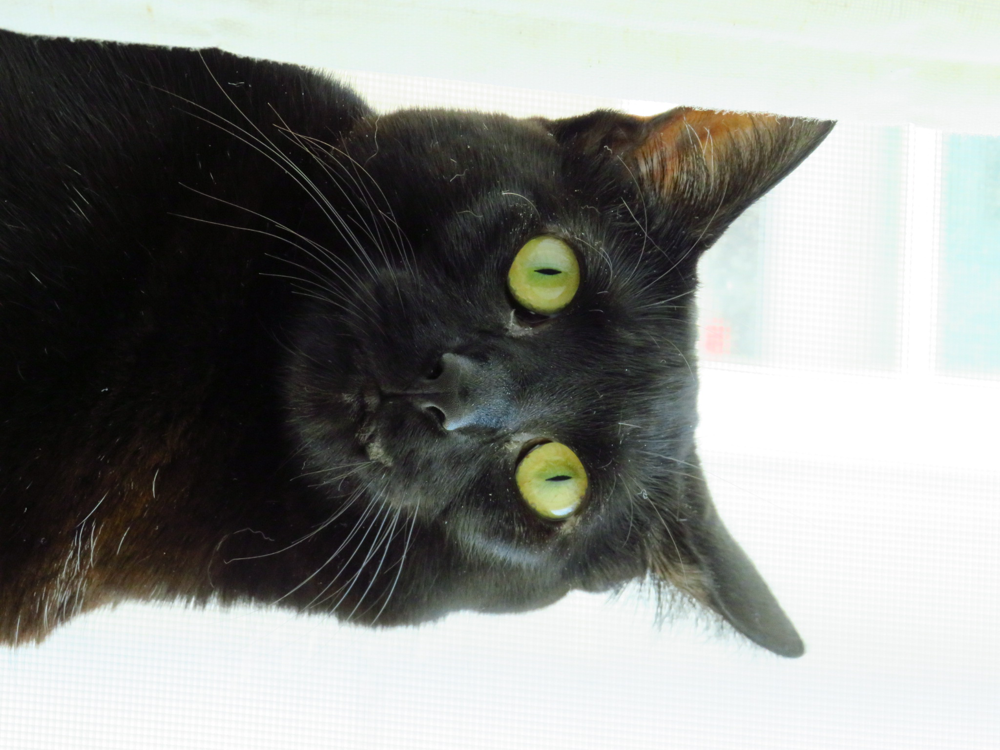
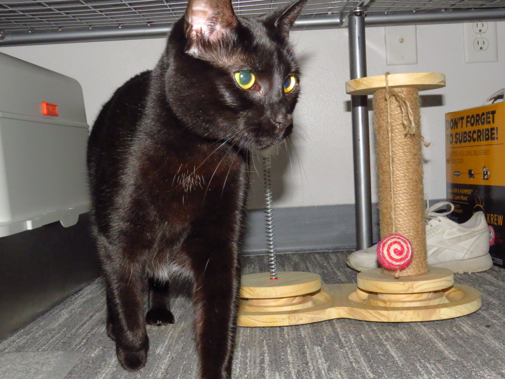
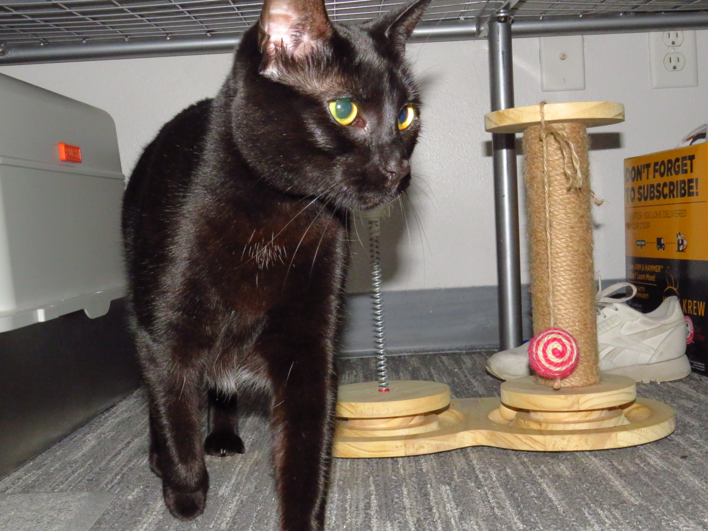
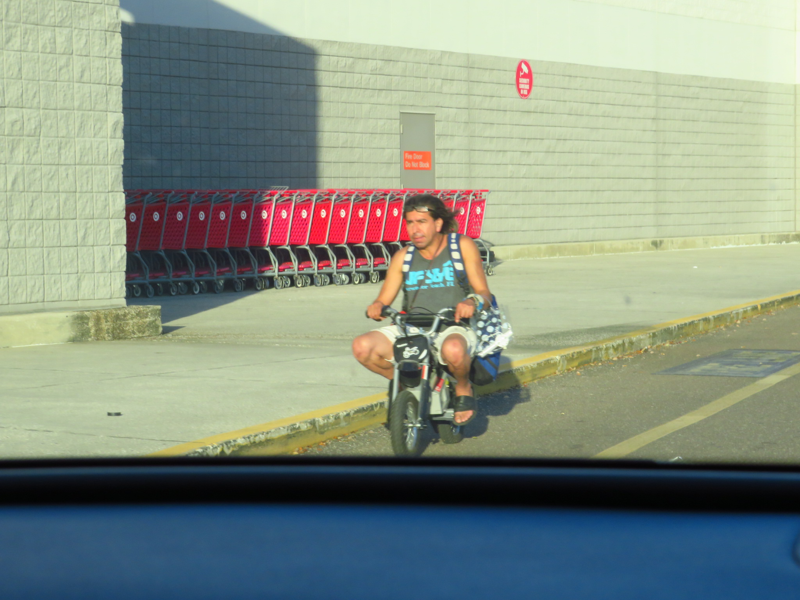
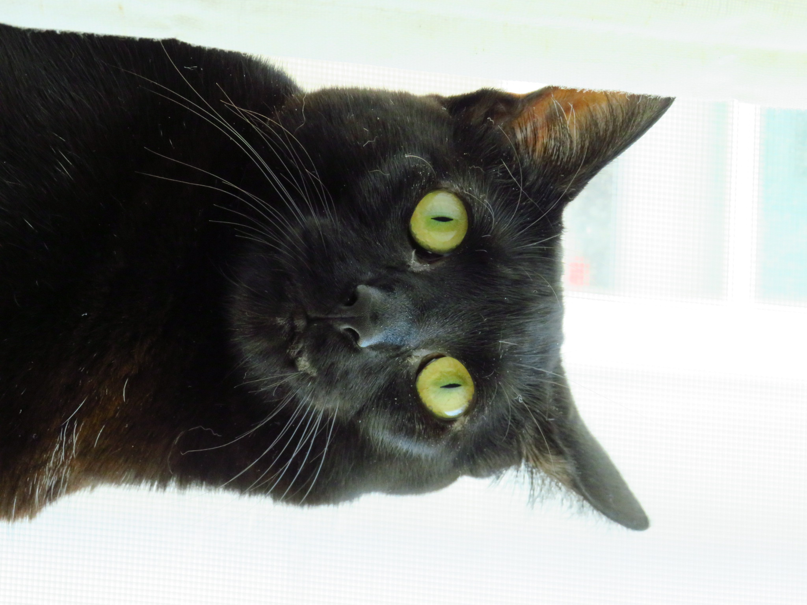
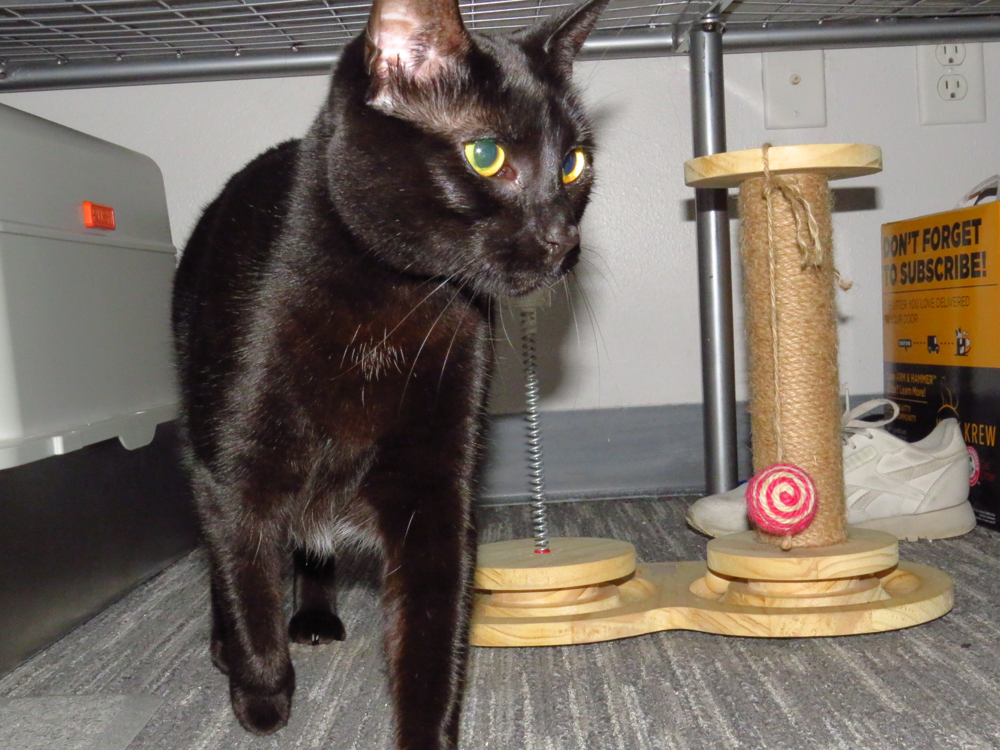

Not much to say... I just took my camera while Luiza was driving and snapped some pictures on the way to Target.
Just a little bit of a day in Temple Terrace.

 

 

 

Not much to say... I just took my camera while Luiza was driving and snapped some pictures on the way to Target.


